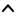

| Top |  |
| gboolean | fixed-cursor | Read / Write / Construct |
| gboolean | follow-cursor | Read / Write / Construct |
| gboolean | has-selection | Read |
| gint64 | playback-cursor | Write |
| gint64 | selection-end | Read |
| gint64 | selection-start | Read |
| gboolean | show-ruler | Read / Write / Construct |
| gboolean | zoom | Write / Construct |
| void | cursor-changed | Run First |
| void | follow-cursor-changed | Run First |
| void | play-toggled | Run First |
| void | selection-changed | Run First |
| void | zoom-in | Run First |
| void | zoom-out | Run First |
GObject ╰── GInitiallyUnowned ╰── GtkWidget ╰── GtkContainer ╰── GtkBin ╰── GtkScrolledWindow ╰── PtWaveviewer
GtkWidget *
pt_waveviewer_new (void);
Create a new, initially blank waveform viewer widget. Use
pt_waveviewer_set_wave() to pass wave data.
After use gtk_widget_destroy() it.
void pt_waveviewer_set_wave (PtWaveviewer *self,PtWavedata *data);
Set wave data to show in the widget. The data is copied internally and may
be freed immediately after calling this function. If data
is NULL, a blank
widget is drawn.
void pt_waveviewer_set_follow_cursor (PtWaveviewer *self,gboolean follow);
Set follow-cursor option to TRUE or FALSE. See also “follow-cursor”.
gboolean
pt_waveviewer_get_follow_cursor (PtWaveviewer *self);
Get follow-cursor option.
struct PtWaveviewer;
The PtWaveviewer contains only private fields and should not be directly accessed.
“fixed-cursor” property“fixed-cursor” gboolean
If TRUE, in follow-cursor mode the cursor is at a fixed position and the waveform is scrolling. If FALSE the cursor is moving.
If “follow-cursor” is FALSE, this has no effect.
Flags: Read / Write / Construct
Default value: TRUE
“follow-cursor” property“follow-cursor” gboolean
If the widget follows the cursor, it scrolls automatically to the cursor’s position. Note that the widget will change this property to FALSE if the user scrolls the widget manually.
Flags: Read / Write / Construct
Default value: TRUE
“has-selection” property“has-selection” gboolean
Whether something is selected (TRUE) or not (FALSE).
Flags: Read
Default value: FALSE
“playback-cursor” property“playback-cursor” gint64
Current playback position in milliseconds.
Flags: Write
Allowed values: >= 0
Default value: 0
“selection-end” property“selection-end” gint64
End time of selection in milliseconds. If it’s equal to the start time, there is no selection. See also “has-selection”.
Flags: Read
Allowed values: >= 0
Default value: 0
“selection-start” property“selection-start” gint64
Start time of selection in milliseconds. If it’s equal to the end time, there is no selection. See also “has-selection”.
Flags: Read
Allowed values: >= 0
Default value: 0
“show-ruler” property“show-ruler” gboolean
Whether the ruler is shown (TRUE) or not (FALSE).
Flags: Read / Write / Construct
Default value: TRUE
“zoom” property“zoom” gboolean
Set this to TRUE to indicate that the next wave data will be the same
waveform but at a different zoom level. PtWaveviewer needs this to
decide which part of the waveform should be shown.
– Note: This will be probably removed with the next API break in
version 1.6 and integrated into pt_waveviewer_set_wave().
Flags: Write / Construct
Default value: FALSE
“cursor-changed” signalvoid user_function (PtWaveviewer *viewer, gint64 position, gpointer user_data)
Signals that the cursor’s position was changed by the user.
viewer |
the waveviewer emitting the signal |
|
position |
the new position in stream in milliseconds |
|
user_data |
user data set when the signal handler was connected. |
Flags: Run First
“follow-cursor-changed” signalvoid user_function (PtWaveviewer *viewer, gboolean follow, gpointer user_data)
Signals that the “follow-cursor” property has changed.
viewer |
the waveviewer emitting the signal |
|
follow |
the new value |
|
user_data |
user data set when the signal handler was connected. |
Flags: Run First
“play-toggled” signalvoid user_function (PtWaveviewer *viewer, gpointer user_data)
Signals that the user requested to toggle play/pause.
viewer |
the waveviewer emitting the signal |
|
user_data |
user data set when the signal handler was connected. |
Flags: Run First
“selection-changed” signalvoid user_function (PtWaveviewer *viewer, gpointer user_data)
Signals that the selection was changed (or unselected) by the user. To query the new selection see “has-selection”, “selection-start” and “selection-end”.
viewer |
the waveviewer emitting the signal |
|
user_data |
user data set when the signal handler was connected. |
Flags: Run First
“zoom-in” signalvoid user_function (PtWaveviewer *viewer, gpointer user_data)
Signals that the user requested to zoom into the waveform.
viewer |
the waveviewer emitting the signal |
|
user_data |
user data set when the signal handler was connected. |
Flags: Run First
“zoom-out” signalvoid user_function (PtWaveviewer *viewer, gpointer user_data)
Signals that the user requested to zoom out of the waveform.
viewer |
the waveviewer emitting the signal |
|
user_data |
user data set when the signal handler was connected. |
Flags: Run First